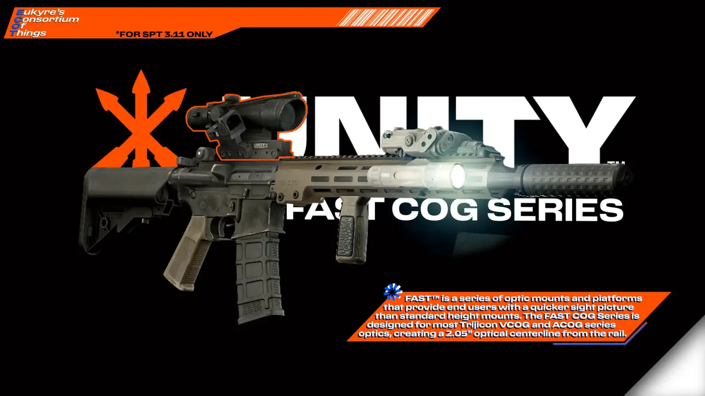
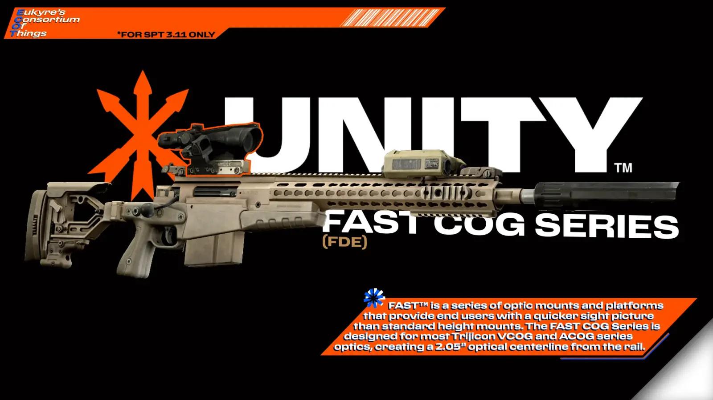
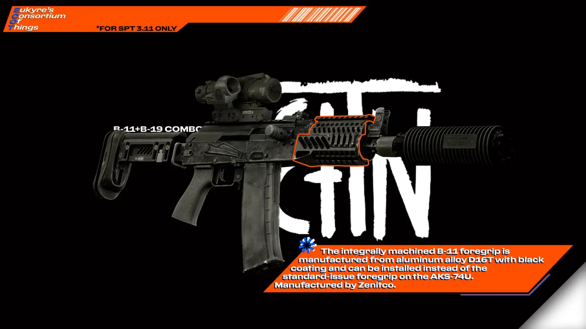

ECOT - Eukyre's Consortium of Things
- Downloads
- 23,209
- Favourites
- 47
- Mod lists
- 78
ECOT (or, Eukyre’s Consortium of Things) is an all-in-one mod in which I will be adding most of my future content that isn’t set-up for Echoes of Tarkov, or my other standalone mods; as such, you can expect to find a wide variety of items in this mod, from Glocks to specific Shark Plushies (Yes, they’re back.)
THIS MOD REQUIRES EPIC’S ALL IN ONE TO WORK.
You have alerted the shork.
Currently, this mod contains the following items:
- .338 Lapua Magnum RIP
- .338 Lapua Magnum Raufoss
- .338 Lapua Magnum Raufoss ammo pack (10 pcs)
- .40 S&W +P
- .40 S&W +P ammo pack (50 pcs)
- .40 S&W FMJ
- .40 S&W FMJ ammo pack (50 pcs)
- .40 S&W JHP
- .40 S&W JHP ammo pack {50 pcs)
- .40 S&W RIP
- .40 S&W Red Tracer
- .40 S&W Tracer ammo pack (50 pcs)
- .40 S&W Woodsman
- .40 S&W Xtreme Penetrator
- 5.56x45 HK PM Gen.3 MR556 STANAG 30-round magazine
- A-TEC A-Flow .300 BLK birdcage flash hider
- A-TEC A-Flow .300 BLK sound suppressor
- AAC Ti-RANT 45S .45 ACP sound suppressor
- AAC Ti-RANT 45S .45 ACP sound suppressor (FDE)
- AK 7.62x39 Hungarian “Tanker” 20-round magazine
- AK 7.62x39 modified windowed 30-round magazine (issued ’55 or later)
- AK KRUK CRC 1U020-MIL M-LOK handguard
- AK KRUK CRC 1U020-MIL M-LOK handguard (Anodized Red)
- AK KRUK CRC 1U020-MIL M-LOK handguard (FDE)
- AK KRUK CRC 1U020-MIL M-LOK handguard (Olive Drab)
- AK Molot Arms RPK/VEPR-12 polymer handguard
- AK Zenit B-11 handguard with B-19 upper mount
- AK-74 5.45x39 6L23 modified windowed 30-round magazine
- AK-74 5.45x39 6L23 modified windowed 30-round magazine (Plum)
- AR-10 7.62x51 Magpul PMAG 25 SR-LR GEN M3 25-round magazine
- AR-15 5.56x45 HEXMAG Series 2 PMAG 30-round magazine
- AR-15 5.56x45 HEXMAG Series 2 PMAG 30-round magazine (FDE)
- AR-15 5.56x45 Magpul PMAG 30 GEN M3 TTI “Base Pad +5/6” 35-round magazine
- AR-15 5.56x45 Magpul PMAG 30 GEN M3 TTI “Base Pad +5/6” 35-round magazine (FDE)
- AR-15 5.56x45 Magpul PMAG 40 GEN M3 TTI “Base Pad +5/6” 46-round magazine
- AR-15 5.56x45 Magpul PMAG 40 GEN M3 TTI “Base Pad +5/6” 46-round magazine (FDE)
- AR-15 5.56x45 Strike Industries PMAG 33-round magazine
- AR-15 5.56x45 Strike Industries PMAG 33-round magazine (FDE)
- AR-15 AB Arms SBR P*Grip pistol grip
- AR-15 AB Arms USS-X stock (FDE)
- AR-15 Adaptiv Defense URR RAHG handguard
- AR-15 Adaptiv Defense URR RAHG handguard (Anodized FDE)
- AR-15 Adaptiv Defense URR RAHG handguard (Prototype)
- AR-15 Aero Precision Gen.2 Enhanced 12.7 inch M-LOK handguard
- AR-15 Aero Precision Gen.2 Enhanced 15 inch M-LOK handguard
- AR-15 Aero Precision Gen.2 Enhanced 7.3 inch M-LOK handguard
- AR-15 Aero Precision Gen.2 Enhanced 9.3 inch M-LOK handguard
- AR-15 BCM GUNFIGHTER MOD 0 pistol grip
- AR-15 BCM GUNFIGHTER MOD 0 pistol grip (FDE)
- AR-15 BCM GUNFIGHTER MOD 2 SOPMOD buttstock
- AR-15 BCM GUNFIGHTER MOD 2 SOPMOD buttstock (FDE)
- AR-15 BCM KMR13 KeyMod 13 inch handguard
- AR-15 BCM KMR13 KeyMod 13 inch handguard (FDE)
- AR-15 BCM Mk.2 5.56x45 upper receiver
- AR-15 BCM Mk.2 5.56x45 upper receiver (FDE)
- AR-15 BCM Raider M10 10 inch M-LOK handguard
- AR-15 Daniel Defense Fixed front sight
- AR-15 Daniel Defense Fixed rear sight
- AR-15 Geissele A22 pistol grip
- AR-15 Geissele A22 pistol grip (DDC)
- AR-15 Magpul MIAD pistol grip
- AR-15 Magpul MOE SL-S buttstock
- AR-15 Magpul MOE SL-S buttstock (FDE)
- AR-15 Magpul MOE-K2 pistol grip
- AR-15 Magpul MOE-K2 pistol grip (FDE)
- AR-15 Reptilia CQG pistol grip
- AR-15 Reptilia CQG pistol grip (FDE)
- AR-15 Strike Industries Advanced Receiver Extension buffer tube (Anodized Blue)
- AR-15 Strike Industries Advanced Receiver Extension buffer tube (FDE)
- AR-15 Strike Industries Advanced Receiver Extension buffer tube (Olive Drab)
- AR-15 TangoDown BG-18 pistol grip
- B5 Systems M-LOK reversed vertical grip
- B5 Systems M-LOK reversed vertical grip (Coyote Tan)
- B5 Systems M-LOK reversed vertical grip (Wraith Grey)
- B5 Systems M-LOK vertical grip
- B5 Systems M-LOK vertical grip (Coyote Tan)
- B5 Systems M-LOK vertical grip (Wraith Grey)
- BLAHAJ soft shark toy
- BLAHAJ soft shark toy (Small)
- Daniel Defence Enhanced Picatinny vertical foregrip
- Daniel Defence Enhanced Picatinny vertical foregrip (Coyote Brown)
- Daniel Defence Enhanced Picatinny vertical foregrip (Slate Gray)
- Dead Air Sandman-S 7.62x51 sound suppressor
- EOTech EXPS3 holographic sight cover (ECOT Splinter)
- FN FNX slide cover (FDE)
- FN FNX-45 .45 ACP 5.1 inch threaded barrel
- FN FNX-45 Leupold DeltaPoint slide mount
- FN FNX-45 Tactical .45 ACP pistol
- FN FNX-45 Trijicon RMR slide-mount
- FN FNX-45 pistol slide
- FN FNX-45 tritium front sight
- FN FNX-45 tritium rear sight
- FN FNX/FNP .45 ACP 15-round magazine
- FN SCAR 20 SSR enhanced marksman stock (FDE)
- FN SCAR-20S Extended bottom rail
- FN SCAR-20S Multi-Caliber upper receiver (FDE)
- Glock .40 S&W 15-round magazine
- Glock .40 S&W KRISS G22 MagEx 31-round magazine
- Glock .40 S&W Lone Wolf AlphaWolf threaded barrel
- Glock 17L 9x19 6 inch barrel
- Glock 17L MOS pistol slide
- Glock 22 .40 S&W 114mm barrel
- Glock 22 .40 S&W pistol
- Glock 22 MOS pistol slide
- Glock MOS Trijicon RMR mount base
- Glock Strike Industries ARK pistol slide
- Glock Zaffiri Precision ZPS.4 pistol slide
- HK 416A8/G95KA1 KeyMod extended handguard
- HK 416A8/G95KA1 KeyMod handguard
- HK MP5/40 .40 S&W 30-round magazine
- HK MP5/40 .40 S&W submachine gun
- HK MP5/40 .40 S&W upper receiver
- HK MP5/40 3-lug suppressor adapter
- HK MP5/40SD .40 S&W sound suppressor
- HK MP5/40SD .40 S&W upper receiver
- HK UMP .40 S&W 30-round magazine
- HK UMP .40 S&W 8 inch threaded barrel
- HK UMP .40 S&W submachine gun
- HK UMP custom AR buffer tube stock
- HK UMP modified Zhukov-U handguard
- HRF Skiff rail mount
- Holosun HE509T low profile mount
- Irregular Defense OMM optic mount
- Irregular Defense OMM optic mount (FDE)
- KAC DSR300 .300 BLK sound suppressor
- Kalashnikov AKS-74UN 5.56x45 assault rifle
- Kastle Group FRT 226 scope mount
- Kastle Group FRT 226 scope mount (FDE)
- Kastle Group FRT 226 scope mount (Sand)
- KeyMod to M-LOK adapter plate
- M4A1 FSB chopped gas block
- M700 Remington wooden stock
- Ops-Core AMP headset (Black Camo)
- Ops-Core AMP headset (Coyote Tan Camo)
- Ops-Core AMP headset (Coyote Tan)
- Peltor ComTac VI headset
- Rugged Obsidian9 9x19 sound suppressor
- Rugged Obsidian9 9x19 sound suppressor (FDE)
- Rugged Obsidian9-S 9x19 sound suppressor
- Rugged Obsidian9-S 9x19 sound suppressor (FDE)
- SilencerCo Osprey 45 2.0 .45 ACP sound suppressor
- SilencerCo Osprey 45 2.0 .45 ACP sound suppressor (FDE)
- SilencerCo Osprey 9 2.0 9x19 sound suppressor
- SilencerCo Osprey 9 2.0 9x19 sound suppressor (FDE)
- Troy Battlesight offset front sight
- Troy Battlesight offset rear sight
- Tungsten Cube (217mm)
- Unity Tactical FAST COG sight mount
- Unity Tactical FAST COG sight mount (FDE)
- Unity Tactical FAST COMP-series scope mount
- Unity Tactical FAST COMP-series scope mount (Bronze)
- Unity Tactical FAST COMP-series scope mount (FDE)
- Unity Tactical FAST COMP-series scope mount (Green)
- Unity Tactical FAST COMP-series scope mount (White)
- Unity Tactical FAST LPVO 30mm ring scope mount
- Unity Tactical FAST LPVO 30mm ring scope mount (FDE)
- Unity Tactical FAST LPVO canted optic mount
- Unity Tactical FAST MRDS 509T baseplate
- Unity Tactical FAST MRDS ACRO baseplate
- Unity Tactical FAST MRDS DeltaPoint baseplate
- Unity Tactical FAST MRDS RMR baseplate
- Unity Tactical FAST MRDS sight mount
- Unity Tactical FAST MRDS sight mount (FDE)
- Unity Tactical FAST MRO sight mount
- Unity Tactical FAST MRO sight mount (FDE)
- Unity Tactical FAST Micro sight mount (Bronze)
- Unity Tactical FAST Micro sight mount (Green)
- Unity Tactical FAST Micro sight mount (White)
- Unity Tactical RAXIS mount
- Unity Tactical RAXIS mount (FDE)
- Walker’s Razor Digital headset (Coyote Brown)
- Walker’s Razor Digital headset (Multicam)
- Walker’s Razor Digital headset (Special)
This mod features a handful of vanilla item rebalances, mostly to do with items added alongside them, those being:
- Re-adding .336 TKM AP-M to Mechanic LL3
- Removing the proprietary stats from the Red SI ARE Buffer Tube
Once more balance changes are made, I will be adding a config with an option to disable the rebalances.

Currently, the following items are planned additions:
- AR-15 STC Tactical “Valentine” muzzle brake
- Rugged Obsidian 9x19 suppressor
- MPR45 Offset BUIS mount (Specifically for Canted Iron Sights)
- Browning Hi-Power 9x19 pistol
- Smith & Wesson M&P 9x19 pistol


Massive thank you to the amazing team I’m glad to now be a part of, WTT; particularly EpicRangeTime, for teaching me how to make assets and texture; Tron for the SP Smart Materials and other texture assistance; and Groovey for making the codebase that this mod runs on. Thank you, guys!
Check out the WTT Discord server here.
If you want to, you can support my work on my Ko-Fi page, found here.
Version
1.3.5
What’s Changed
- RU locale added by @Evgencheg in https://github.com/eukyre/Eukyre-Consortium/pull/7
- Fixed M157 smooth-zoom issues
Full Changelog: https://github.com/eukyre/Eukyre-Consortium/compare/v1.3.4...v1.3.5
Dependencies
Version
1.3.4
- Fixed M157 Scope locales (Thanks Dandy!)
Dependencies
Version
1.3.2
Minor bug fixes (CQR Stock compatibility, FNX Slide Cap fix.)
Dependencies
Version
1.3.1
REMOVE ANY INSTANCE OF ECOT BEFORE UPDATING TO THIS VERSION.
Epic’s AIO is now a dependency due to the SANDMAN-S suppressor, sorry. :/
Squashed some bugs that were reported by the community. Thanks for the reports, guys!
- Fixed the mod’s nesting (Now SPT>user>mods>EukyreECOT.)
- New Adaptiv Defense URR rails for the AR-15 platform
- New EOTech EXPS3-DCR with custom reticle.
- Fixed collisions for the STANAG replacement mag.
- Removed unused ‘CustomHideoutRecipes’ function that was printing a warning on load.
- Removed leftover IDs from the 3.11 Creedmoor Remaster mod that were causing errors with another mod.
- General Bundle updates across the board.
Dependencies
Version
1.3.0
Man, this one’s been a long time coming, so long that I decided to skip a version tag, lol.
I’ve been working on this version ever since V1.1 came out all the way back in July! This update adds nearly 200+ new items; I can’t even realistically make a list for this.
There is some rebalancing for existing items, too. Mostly just new recoil stats for the rechambers and other things akin to that; basically just trying to make everything fit better in the world.
If I had unlimited time (which i basically did; I’m already kind of pushing it given that it’s been like 6 months,) I would’ve gone back and remastered every single item in this mod, because we very recently picked up a new texture workflow. but that would’ve added a solid month or two more onto this project.
Dependencies
Version
1.1.0
DELETE ANY OLD VERSION OF ECOT BEFORE UPDATING AS OVERLAPS MAY OCCUR.
The Modifications Update
This update adds a metric tonne of new weapon attachments, ranging from handguards to foregrips to scopes, with the aim of increasing the individual customisability of a lot of the weapons in the game, including some new ones added by yours truly.
This Update Adds the following Items:
- .338 Lapua Magnum Raufoss
- FN FNX-45 .45 ACP pistol
- Strike Industries ARE Buffer Tube Remasters (Adding ODG, FDE and Blue colours)
- Daniel Defense Picatinny Vertical Foregrips (Black, FDE and Slate Grey)
- KRUK CRC 1U020 AK Handguards (Black, FDE, ODG, Anodized Red)
- AK Molot Arms VEPR-12/RPK style polymer handguard AKS-74U Zenit B11 + B19 combo handguard
- AK 6L23 modified windowed magazines (Black, Plum)
- AKM Hungarian “Tanker” 20-round modified window mag
- AKM AK55 30-round modified window magazine
- AR15 HEXMAG 30-rounders (Black, FDE)
- AR15 HK PM Gen.3 Windowed Magazines (Black, FDE, Sand)
- AR15 Strike Industries 33-round magazine (Black, FDE)
- SIG Sauer ROMEO7 reflex sight (Black, FDE)
- SIG ROMEO7 rubber lens caps
- SIG Sauer BRAVO5 5x30 scope
- Holosun 509T reflex sight (Black, FDE)
- Tasco ProPoint 1x42 reflex sight
- EOTech 553 holographic sight (Tan)
- EOTech EXPS3-1 Holographic Sight (Black)
- EOTech EXPS3 optic cover (ECOT Splinter)
- Unity Tactical FAST Micro optic mount (Green, White, Bronze)
- Unity Tactical FAST MRO optic mount (Black, FDE)
- Unity Tactical FAST LPVO scope mount (Black, FDE, ODG)
- Unity Tactical FAST LPVO Canted Aimpoint optic mount
- Unity Tactical FAST COMP series optic mount (Black, FDE, ODG, Bronze, White)
- Unity Tactical FAST MRDS optic mount (Black, FDE)
- Unity Tactical FAST MRDS optic baseplates (ACRO, Deltapoint, RMR, 509T)
- Kastle Group FRT 226 optic mount (Black, FDE, Sand)
- AAC Ti-RANT .45 ACP sound suppressor (Black, FDE)
This Update also rebalances some existing items within Tarkov; those being:
- Nerfed the SI ARE Buffer Tubes to all be equal; no more Red Supremacy.
- Re-Added .336 TKM AP-M to Mechanic LL3.
- Added some new Barters for existing weapons with custom attachments at various trader Loyalty Levels.
